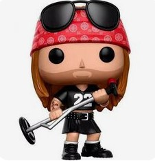

Se formaron en Los Angeles en 1985, cuando se juntaron dos guitarristas Slash e Izzy Stradlin, el bajista Duff McKagan, el batería Steven Adler y el vocalista Axl Rose. Con esta composición, el grupo lanza en 1987 su primer álbum, Appetite for Destruction, bajo el sello Geffen Records. Un disco ya con temas de leyenda como el Sweet Child O' Mine, con uno de esos riffs de guitarra inolvidables, o con Welcome To The Jungle. La banda comienza una gira y ofrece numerosas actuaciones hasta que, gracias a la MTV, que les da a conocer a todo el mundo, su disco consigue auparse a los puestos más altos en las listas americanas. Paralelo a estos éxitos, sus apariciones en público resultaban bastante escabrosas. Tan pronto destrozaban las habitaciones de los hoteles de las ciudades donde actuaban, como montaban peleas o anulaban conciertos por problemas de drogas. En 1988 se publica G N' R Lies. En 1989 actúan en la entrega de los premios MTV y comienzan una gira con los Rolling Stones. En 1990 Adler abandona el grupo por su adicción a las drogas, y es sustituído por Matt Sorum. Tras un duro trabajo, en 1991 publican dos álbumes consecutivos: Use Your Illusion I y Use Your Illusion II, que presentan una gigantesca gira con gran éxito. Dos discos para la historia. Actúan en el festival Rock en Río, en el estadio Maracaná. Ese mismo año (1991) Izzy Stradlin abandona el grupo por el cansancio de las giras y por desavenencias con Axl. El siguiente trabajo llegó en 1993, The Spaghetti Incident, un disco de versiones. Tras multiples discusiones el grupo se lo queda Axl Rose, mientras ya en el siglo XXI, el otro líder del grupo, el guitarrista Slash, se monta en una nueva aventura Velvet Revolver.
